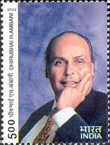

Dhirubhai Ambani
1932 - 2002
Founder of Reliance Industries (RIL)
Dhirajlal Hirachand Ambani, popularly Knows as Dhirubhai Ambani (28 December 1932 - 6 july 2002) was susccesful Gujarati Indian business tycoon Who founded Reliance Industries. Ambani took Reliance public in 1977 and worth US$ 2.9 Billion in 2002 upon his death. IN 2016, he was honoured posthumously with the padma Vibushan, India's second-highest civilian honour for his contribution to trade and industry.

Ambani on an Indian postal stamp issued in 2002
Some About Dhirubhai Ambani
- Born - Dhirajlal Hirachand Ambani 28 December 1932 Chorwad, Junagadh District, Western India States Agency, British Raj (present-Day Gujarat, India)
- Died - July 6, 2002 (aged 69) Mumbai, Maharashtra, India
- Nationality - Indian
- Occupation - Founder of Reliance Industries (RIL) Founder of Reliance Capital, Reliance Infrastructure & Reliance Power (Which were later carved out from RIL)
- Spouse(s) - Kokila Dhirubhai Ambani
- Children - 4 (including MUkesh Ambani and Anil Ambani)
- Awards - Padma Vibushan (2016)
Awards and Recognition
- 1996, 1998 and 2000 – Featured among Power 50-the most powerful people in Asia by Asiaweek magazine.
- June 15, 1998 – "Dean's Medal" by The Wharton School, University of Pennsylvania, for setting an outstanding example of leadership. Dhirubhai Ambani was the first Indian to receive the Dean's Medal.
- November 8, 2000, Mumbai - Conferred 'Man of the Century' award by Chemtech Foundation and Chemical Engineering World in recognition of his outstanding contribution to the growth and development of the chemical industry in India.
- August 10, 2001, Mumbai – The Economic Times Awards for Corporate Excellence for Lifetime Achievement Award.
- Dhirubhai Ambani was named the "Man of 20th Century" by the Federation of Indian Chambers of Commerce and Industry (FICCI).
- India post released a postal stamp featuring Dhirubhai Ambani on 28 December 2002.
- October 2011 - posthumously awarded the ABLF Global Asian Award at the Asian Business Leadership Forum Awards.
- January 2016 - posthumously awarded the Padma Vibhushan, the country's second-highest civilian award .